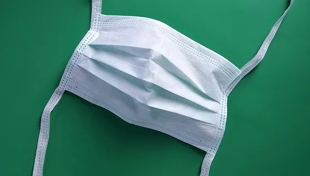
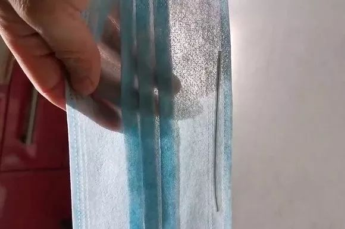
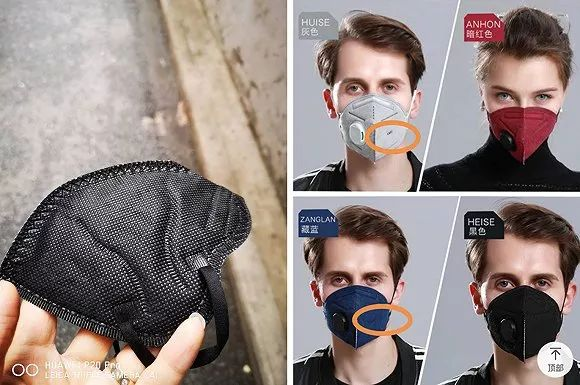
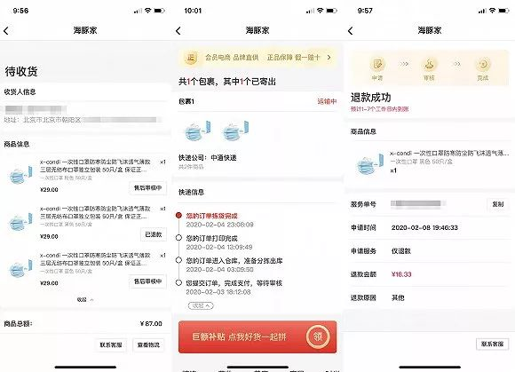

疯狂的口罩
原文链接 备份链接 只用了8天的时间，一家淘宝店的日销售额从5000多元暴涨到9000多万元。这是新冠肺炎爆发后，疯狂膨胀并异化的口罩市场现状。 疫情突然袭来，口罩这个又小又简单的日用品，成了人们四处抢购的必需品。当药店、超市难以满足需 …

图片来源：视觉中国
记者：林北辰 编辑：文姝琪
“
即使在网上买到了口罩，你也不一定能够用上——延迟发货是最普遍的情况；发货了，订单还要面临虚假发货、商品是三无产品的风险。
”
“你能买到口罩吗？”
这是疫情中所有人最牵挂的话题。
新型冠状病毒肺炎爆发以来，社交平台上，口罩短缺、卖家不发货、买到假口罩的消息频出。除去国家征用、运往一线的防疫物资外，对普通消费者而言，要买到足量、正规、合乎标准的口罩是眼下最大的难题。
口罩是对抗疫情的必需品，在上海、厦门等地的线下药店和社区居委会，已实行限购政策，通过预约购买的方式，以户为单位向居民发放口罩，单次可领的口罩不超过5个。
这能解决一部分应急需求。但对于更多地区，以及随着复工需要出门上班的人群来说，作为消耗品的口罩，购买的速度远远赶不上消耗速度。
线下满大街去找口罩，费时还有风险。于是，电商成了口罩需求的最大载体，宅在家中的人们热切地全网搜索还能够下单的口罩链接。
2月以来，许多焦虑的市民却发现，即使在网上买到了口罩，你也不一定能够用上——延迟发货是最普遍的情况；发货了，订单还要面临虚假发货、商品是三无产品的风险。
2月7日，根据湖南省长沙市检察院的通报，长沙检方提前介入了长沙公安局破获的三起销售假飘安口罩案。长沙警方侦破的该三起案件中，共计197万只假冒“飘安”口罩流入湖南市场，这批假“飘安”口罩的共同特点是只有薄薄一层，一扯即破。
贩假者以0.3元/只的价格，从非法渠道购进假货，转手以0.75元至1元/只的价格将假口罩流入市场，这些假货往往流入诊所、药店、超市以及微商的手中。
在长沙市高桥医药流通园的案例中，100万只口罩通过倒卖流入诊所、药店、超市以及微商的手中，贩假者仅靠转手，非法获利45万元。
假口罩的流向中，电商是重灾区。
家住上海的史女士是假口罩的第一批受害者，在疫情爆发的1月20号，她就在一家名为“鑫佳安医疗器械专营店”的淘宝店购入了100只口罩。根据公开的店铺信息，该店于2018年9月1日成立，其好评率为100%，在描述、服务栏的评价均为4.7分。
7天后，史女士顺利收到了口罩，但这批口罩却是肉眼可见的假货。薄如蝉翼的口罩，仅仅只有一层布，在阳光下甚至可以透光。

透光的口罩
史女士很快向平台举报，进行了退款申请，并转向了实体药店的购买渠道。但在全民疯抢口罩的情况下，史女士已经很难再买到口罩了。
1月21日，万亮在天猫平台上搜索”KN95口罩”，进入了排名较为靠前、发货地为金华的一家“向天歌旗舰店”，最终选定了一款“防病菌N95口罩”，以155元的价格买下了一盒30只的口罩，商家承诺顺丰包邮。
收到商品后，万亮发现实物并没有外包装盒也没有编号。更关键的是，口罩也没有打上官方图片中的正品商标。无商品名，无厂名、厂址和生产日期，这是一款“三无”口罩，万亮向客服提起了退款申请，商家很快就同意了退款。

实物没有右图所示的商标印记
对此，阿里巴巴相关负责人回复称，聚划算百亿补贴官方微博曾经在1月26日发文澄清，向天歌旗舰店确实存在部分商品标识标注不合格问题，平台已进行了相应处理。
而在向天歌旗舰店的官方涵中，该商家称临时工们对货品不熟悉导致了部分商品错发，错发产品可无条件退款，并附上了口罩质检报告。但这样的解释并不能让万亮满意，他认为，查出三无产品却无法索赔是平台的一种“不作为”。
相比于万亮的遭遇，北京的苏小姐碰到的事情更离奇，一名无中生有的“朋友”代收了她的口罩。
1月23日，苏小姐与朋友在拼多多平台上拼单了一款3M 9132口罩，一盒30只，售价143.5元。10天之后，据拼多多上的物流信息显示，这款商品由申通承运，2月6日从山西省发出，2月7日快件到达北京，在当天下午显示已签收，签收人显示是“朋友”。

从未收到的快递及虚假物流信息
然而，苏小姐在现实中并未收到货品，负责派送的“快递员”电话无法接通，承运该快递的申通快递则声称发货商的订单有问题。
苏小姐向拼多多客服投诉，一天后，拼多多方面向苏小姐退款并给予30元购物券的补偿，同时称将处罚商家，不让其做新的宣传和广告投放。
另根据微博网友的爆料，比起从未收到的快递，还有一种更隐蔽的作假方式是长时间显示“揽收”却迟迟没有物流信息更新。
2月8日，一款名为“海豚家”的购物APP因为大量售卖口罩，登至苹果应用商店购物榜第二位，超越了手机淘宝及京东、小米有品，位列拼多多之后。然而，一众网友爆料称，“海豚家”平台上的大量订单在运输途中被强制退款、私自扣款。

快递运输中，强制退款的订单
对此，海豚家的解释是，由于供货商物资被政府征用，无法为用户正常发送，只能先行为用户办理退款；官方声明中并未给出“订单运输途中被征用”的解释。
在用户频繁被假口罩、虚假发货等问题困扰时，其实各大电商平台也一直在出台政策打击问题商家。
据阿里平台治理部相关负责人给出的数据，疫情期间，阿里已拦截、删除可疑问题口罩57万件，15家店铺因严重违规被永久清退，其中5家被移送执法机关、追究法律责任。
阿里官方称，自1月中旬起，阿里巴巴已提高了对口罩等类目商品加强资质审查。对不实宣传、滥发商品、疑似假冒伪劣等行为均从重从严从快处理，从限流、屏蔽、下架相关商品，到直接永久关闭问题店铺。淘宝也在阶段性的同步公示违规处罚名单。
而对于虚假发货问题，一位电商从业者向界面新闻记者解释，这是电商行业典型的“老梗”。
对于平台来说，并不是所有的流程都能在电商平台监督，发现问题后，其首先采取的方式是商品下架，鉴别属于哪类违规后，若情况属实再对商家进行处罚。
根据拼多多“抗疫工作组”发布的数据，自1月23日至2月4日20时，因涉嫌临时调价、虚假发货和商品质量等问题，拼多多平台在商品的上架前后累计拦截及下架了超过50万件商品。根据平台与店铺的商事约定，对涉及虚假宣传和蹭关键词的超过6000家店铺采取限制商品发布等处理措施，关闭清退超过40家店铺。
上述人士表示，疫情爆发后，电商平台上的口罩乱象，一部分是由于部分卖家钻空子，另一部分则是作为渠道商的卖家承担了上游工厂与消费者双边的压力。
上游厂商由于三倍的人力工资成本和国家征用，无法向渠道商正常交付，作为渠道商的商家在电商平台进行预售后，需要对下单的消费者履约，然而这时上游的工厂已无法顺利交付或已提高价格，渠道商因此无法对已付款的订单进行发货。
但对于用户而言，买到假口罩或者遇到虚假发货等问题，不仅会遭遇金钱上的损失，也致使他们错失了购买到正品口罩的时机。
上海大邦律师事务所高级合伙人、律师游云庭分析，在法律上，这样的事件属于电子商务的小额纠纷，很难通过申诉实现法定的3倍赔偿，一般以退款为主要的调解手段。而在当前的局面下，贩卖假口罩事实上是令消费者丧失了后续的交易机会，消费者有权到工商局以及消费者权益保护委员会进行投诉。
对于平台处理违规商家的方式，游云庭解释，平台若在发现商家售假后未及时下架，需要对后续的消费者承担连带责任。目前，消费者若要举报商家和平台，可以通过挂号信与网站两种方式对消费者权益保护委员会进行举报。
对于口罩骗局及乱象，国务院联防联控机制在2月8日的发布会中表示，假冒伪劣口罩已经成为不法分子非法牟利的手段，考虑到它的特殊危害性，市场监管部门对其采取顶格处罚，已立案查处320多件。
在未来，要打击囤积居奇、串通涨价、未按规定取得许可和备案擅自生产销售、生产销售不符合安全标准的产品以及过期失效产品等行为。市场监管部门在查办案件中发现涉嫌犯罪的，会及时向公安部门移送，追究当事人的刑事责任。
产能缺口太大仍是用户买不到口罩的核心原因。
据公开数据，我国2018年全国口罩生产量为45亿只，2019年生产量预计在53亿只。若以14亿人口数计算，将2019年全年生产的口罩分到全国人民手中，平均每人一年只能得到3.8只口罩。
工业和信息化部新闻发言人、运行监测协调局局长黄利斌在此前的发布会上表示，我国是世界上最大的口罩生产和出口国，最大产能每天2000多万只。N95医用防护口罩是大家关注的焦点，但目前N95医用防护口罩的产量每天只有60万只。
工业和信息化部原材料工业司司长王伟解释，买不到口罩的原因是多方面的：其一是消杀用品生产企业在疫情爆发时开工率总体不高，产能还未完全释放；其二是全产业链配套受到阶段性制约，而疫情期间包装瓶生产企业多数还未复工。
产能正在逐渐复苏。2月9日，国家发展改革委经贸司副司长陈达表示，除湖北省外，全国其他30个省份均已部署安排企业复工复产。截止到2月7日，全国口罩生产企业按产能计算的复工率已经达到73%，其中医用口罩产能利用率达87%；全国重点监测的粮食生产、加工企业的复工率达94.6%。
但必须注意的是，即便口罩产能全面恢复甚至翻倍，也是无法满足14亿人每天换一个口罩的需求的。
所以，对于有戴口罩出行的需求的普通民众来说，只能寻找一些靠谱的途径抢购正规口罩；另外，则是要科学合理重复利用现有的口罩。
据界面新闻记者的不完全统计：目前在小米有品和苏宁极物中，可预定韩国KF94型号的口罩；名创优品小程序可预售基础一次性口罩；洋码头APP内可买到15个399元的KN95口罩；京东、天猫上的振德医疗、派顿医疗等医疗器械产品旗舰店，也会不定时对口罩进行补货。
为了对口罩的型号和来源进行溯源，苏宁易购于2月7日上线了“疫情防护医疗用品生产企业查询”功能，可利用企业名称和产品名称查询到口罩的生产企业信息以及使用范围，该系统也支持防护服、医疗帽等医疗用品的信息溯源。
对于在资源紧缺的情况下，口罩被重复使用的做法，华山医院抗生素研究所临床医生、现上海市公共卫生临床中心医生赵旭也是赞同的。
他对界面新闻表示，在上海等以输入性病例为主的城市，居民之间的相互传播情况较少，事实上大家的口罩并不是出门就“脏”了，保持一米以上的距离、少出门、人人都戴口罩的情况下，病毒可被有效防控，也可以减少口罩的消耗。
2月11日举行的国务院联防联控机制发布会上，中国疾控中心流行病学首席专家吴尊友同样表示，有些一次性戴七八个口罩出门的方式完全没有必要，对普通老百姓来说，口罩可重复使用，也没必要打一次电话喝口水就马上扔掉，只要坚持在人员集中的地方戴口罩、勤洗手，普通老百姓就能有效防控新型冠状病毒。
未经授权 禁止转载

原文链接 备份链接 只用了8天的时间，一家淘宝店的日销售额从5000多元暴涨到9000多万元。这是新冠肺炎爆发后，疯狂膨胀并异化的口罩市场现状。 疫情突然袭来，口罩这个又小又简单的日用品，成了人们四处抢购的必需品。当药店、超市难以满足需 …
原文链接 备份链接 23.01.2020本文字数：1298，阅读时长大约2分钟 导读：比春运期间高铁票更难买的东西，是新型冠状病毒蔓延时期的口罩。 作者 | 第一财经 段倩倩 比春运期间高铁票更难买的东西，是新型冠状病毒蔓延时期的口罩。 …
原文链接 备份链接 面对依然紧张的防疫形势，上海的街道、居民区、楼宇不断放出防疫大招，以上海人特有的智慧筑起“上海堡垒”，守卫这座城市。 文 | 陈 冰 2月10日是上海正式意义上的“复工日”，在经历了一个史无前例安静春节之后，人员返程、 …
原文链接 备份链接 图片来源：视觉中国 整理 | 何香奕 实习记者 唐青青 疫情面前，争分夺秒，全国近400万名社区工作者站在了前线。 基层社区承担着排查“第一道防线”，亦有系统布局上的深刻意义。2020年1月27日，国家卫健委指出，社区 …
原文链接 备份链接 个体救援，也是新冠肺炎疫情的重要救援力量，从农民工到退伍军人，他们以杯水尝试灭熄瘟疫之火，很多人甚至都没有留下姓名。大年初五，私家车主雷鹏驾车16小时急行1100公里，直抵武汉，成为了一名救援志愿者。 这是真实故事计 …